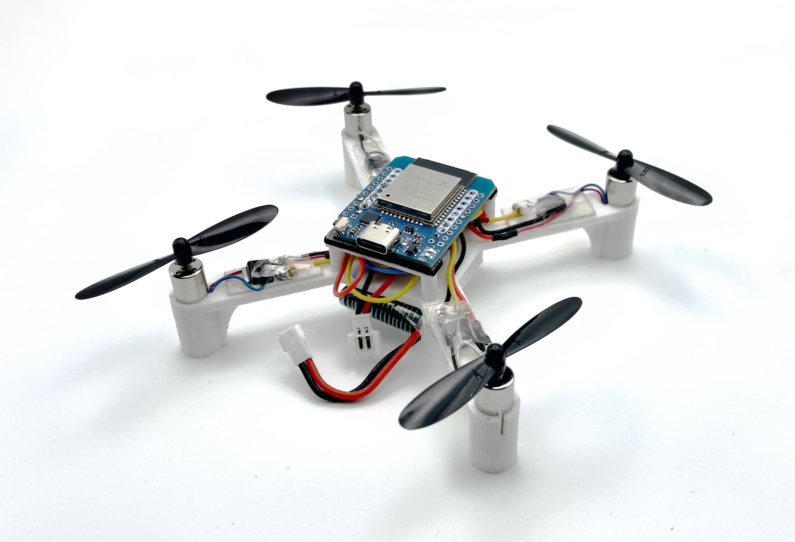
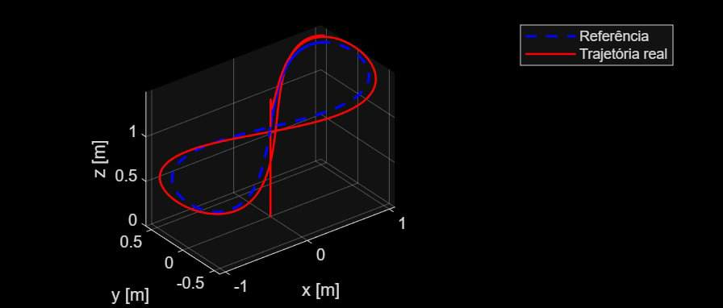
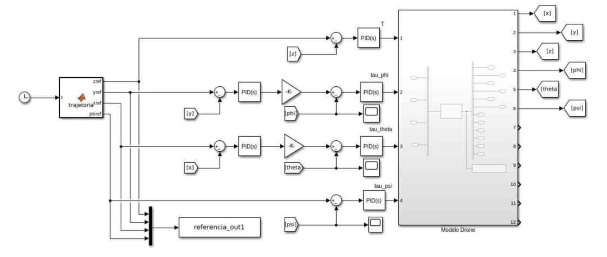

Controle Dinâmico de Voo de um Drone

Veículos aéreos não tripulados (UAVs), como os drones quadricópteros, são dispositivos amplamente utilizados em áreas como filmagem, segurança, monitoramento ambiental e meteorológico, com um mercado amplo em constante crescimento. Do ponto de vista de controle, um quadricóptero representa um sistema desafiador: é altamente não linear, apresenta forte acoplamento entre os eixos, é sub-atuado e instável. Essas características o tornam uma plataforma atrativa para o estudo prático de diferentes estratégias de controle. Este projeto tem como objetivo desenvolver e comparar o desempenho de técnicas de controle aplicadas ao hardware de um drone quadricóptero de baixo custo, tomando como base o Flix, um projeto de drone de código aberto.
O trabalho iniciou-se com uma revisão bibliográfica sobre modelagem e controle de quadricópteros. Em seguida, foi desenvolvido o modelo matemático do drone em MATLAB/Simulink, obtido pela formulação de Newton-Euler e posteriormente linearizado por expansão em série de Taylor em torno do ponto de operação de hover. A validação do modelo foi realizada por meio de simulações físicas.
A partir do modelo validado, foi implementada uma malha de controle PID em arquitetura em cascata, com a malha interna responsável pela estabilização de altitude e a malha externa pelo controle de posição. Os resultados de simulação mostraram que o sistema é capaz de seguir trajetórias complexas, como lemniscatas e helicoides, com desempenho compatível com os requisitos do projeto.

Modelo do drone flix V1, referência do projeto.

Simulação 3D no MATLAB comparando a trajetória de referência planejada (curva em formato de lemniscata/8) e a trajetória real executada pelo drone.

Diagrama de blocos no Simulink para controle em malha fechada e rastreamento de trajetória de um quadricóptero utilizando controladores PID.
As próximas etapas envolvem a implementação embarcada dos controladores no hardware do Flix e a comparação do PID com outras técnicas de controle como LQR e MPC, avaliando robustez, esforço de controle e qualidade de rastreamento.